3.6.1 2D Transformation
In Chapter 3 you learned that you need to convert from one coordinate system to another in order to ultimately display a picture on the TV screen. Now this chapter shows you how to actually do the coordinate system transformations by using matrix calculations.
Usually, 3x3 matrices are used for two-dimensional coordinate transformations and 4x4 matrices are used for three-dimensional coordinate transformations. In addition, to display the coordinates of vertices, we show you how to use the two-dimensional vector [x y 1] and the three-dimensional vector [x y z 1].
In general, a matrix like the following is used for two-dimensional coordinate transformations:
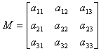
During the transformation process three different variations of this conversion matrix are created to apply scaling information, translation information, and rotation information:
- Scaling matrix to specify enlargements or reductions
To apply scaling information, you multiply a scaling matrix by a vector [x y 1]. The scaling matrix has scaling information for the X-axis and Y-axis specified by the vector. The scaling matrix looks like this:
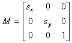
To do the conversion, multiply the matrix by the vector to get this result:
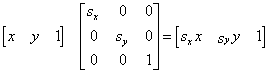
The post-conversion coordinates 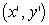 are:
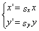
In this way, the x and y coordinates are enlarged or reduced by the corresponding scaling factor (s). Note that if the scaling factor of a certain axis is negative, that axis will be reversed.
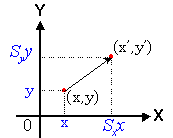
- Translation matrix
The two-dimensional translation matrix looks like this:
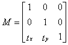
The translation matrix is used to specify movement; it translates the coordinates of an object to move it to a new location. The reason that you need to specify a two-dimensional coordinate in the vector [x y 1] is so you can apply the translation factors specified in the matrix to the coordinates. When you do the multiplication, you get this result:
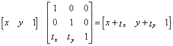
The 1 added as a third element of the vector specifies that the translation factors 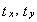 are to be added to each component. This type of vector coordinate system that adds a new constant component 1 is called a homogeneous coordinate system.
- Rotation matrix to specify rotation around a point of origin
If you set the rotational angle to , the rotational matrix looks like this:
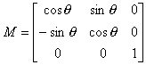
As a standard, positive angles rotate counter-clockwise and negative angles rotate clockwise with the origin at the center as shown here:
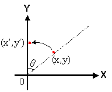
As you can see, the three conversion matrices hold the information needed to specify scaling, translating and rotating.
Nintendo® Confidential
Copyright © 1999
Nintendo of America Inc. All Rights Reserved
Nintendo and N64 are registered trademarks of Nintendo
Last Updated March, 1999